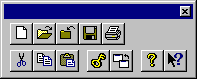

Pasek narzêdzi pojawia siê w górnej czêœci okna aplikacji poni¿ej paska menu. Pozwala on u¿ytkownikowi na szybki dostêp do wielu narzêdzi CrypToola za pomoc¹ jednego klikniêcia mysz¹.
To czy pasek narzêdzi jest widoczny czy ukryty zale¿y od wyboru opcji Pasek narzêdzi z menu Widok (ALT,W,N).
Mo¿esz równie¿ dosun¹æ pasek narzêdzi do dowolnej krawêdzi CrypToola. Aby to zrobiæ, kliknij mysz¹ na czêœæ paska narzêdzi, która nie zawiera ¿adnych przycisków a nastêpnie przesuñ mysz trzymaj¹c naciœniêty klawisz (okreœlane jest to jako ”przeci¹ganie”) do jednej z krawêdzi okna CrypToola, a nastêpnie zwolnij klawisz muszy.
Jeœli przeci¹gn¹³eœ pasek narzêdzi do innej czêœci ekranu, pasek narzêdzi zostanie wyœwietlony w swoim w³asnym okienku, które mo¿e byæ przesuwane i mo¿esz zmieniaæ jego rozmiar.

Mo¿e byæ równie¿ wywo³ana pomoc online dla konkretnej ikony poprzez klikniêcie  a nastêpnie klikniêcie innej ikony lewym klawiszem myszy. Dzia³a to równie¿ w przypadku klikniêcia drugi raz na t¹ ikonkê.
a nastêpnie klikniêcie innej ikony lewym klawiszem myszy. Dzia³a to równie¿ w przypadku klikniêcia drugi raz na t¹ ikonkê.
| Klawisz | Akcja |
 |
Otwiera nowy dokument. |
 |
Otwiera istniej¹cy dokument. CrypTool wyœwietla okienko dialogowe Otwórz, w którym bêdziesz móg³ znaleŸæ i otworzyæ ¿¹dany plik. |
| Zamyka bie¿¹cy dokument. | |
 |
Zapisuje bie¿¹cy dokument b¹dŸ bie¿¹cy szablon pod wskazan¹ nazw¹. Jeœli jeszcze nie podano nazwy dokumentu, CrypTool wyœwietli okno dialogowe Zapisz jako. |
 |
Drukuje bie¿¹cy dokument. |
 |
Usuwa zaznaczone dane z dokumentu i przekazuje je do schowka. |
 |
Kopiuje zaznaczone dane i przekazuje je do schowka. |
 |
Wstawia zawartoœæ schowka w punkcie okreœlonym przez wskaŸnik kursora. |
 |
Wyœwietla klucz dla bie¿¹cego dokumentu (jedynie dla algorytmów klasycznych i symetrycznych). |
 |
Przeskakuje do okna g³ównego bie¿¹cego dokumentu. |
 |
Podaje wersjê programu i prawa autorskie programu CrypTool. |
|
Uaktywnia narzêdzie pomocy online CrypToola. |